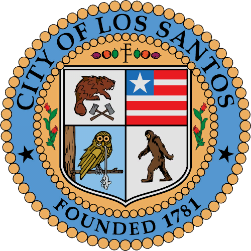

OUR MISSION
LSPD Mission Statement & Organizational Goals. The mission of the Los Santos Police
Department is to provide the highest level of safety, service, and security to the
people of Los Santos. This is accomplished through five departmental goals:
Prevent Loss of Life, Injuries, and Property Damage.
Department Leadership
Chief - 2L-01
Assistant Chief - 2L-02
Deputy Assistant Chief - 2L-03
Department Senior Staff
Commander - 2L-04
Colonel - 2L-5
Captain - 2L-06
Department Staff Team
Corporal - 2L-07
Lieutenant - 2L-08
Master Sargent - 2L-09
Normal Department Ranks
Sargent - 2L-10 (10-15)
Senior Officer - 2L-16 (16- 20)
Officer - 2L-21 (21-30)
Probationary Officer - 2L-31 (31-50)
VISION
The vision of the Los Santos Police Department is to provide the highest level of Safety,
Service, and Security.
SUB-DIVISIONS
The LSPD has four (4) sub-divisions to help do various task officers are not
taught during basic training. These sub-divisions help assist with daily task officers
face during< their shifts. you also have to take a seperate training session for sub-divisions.
and has to be approved by a certified Field Training Officer of the San Andreas Cops Roleplay Community
-----------------------------------------------------------------------
LSPD Port Authority
LSPD Aviation Unit
LSPD Traffic Services Unit
LSPD Tactical Gang Unit

Come join the Los Santos Police Department, we always have a spot open for you!